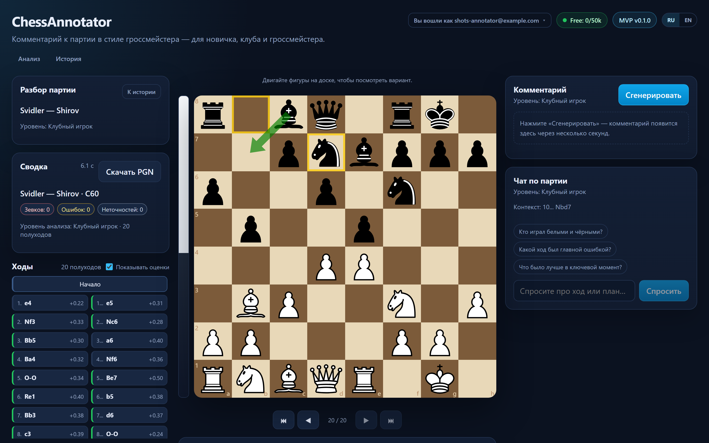
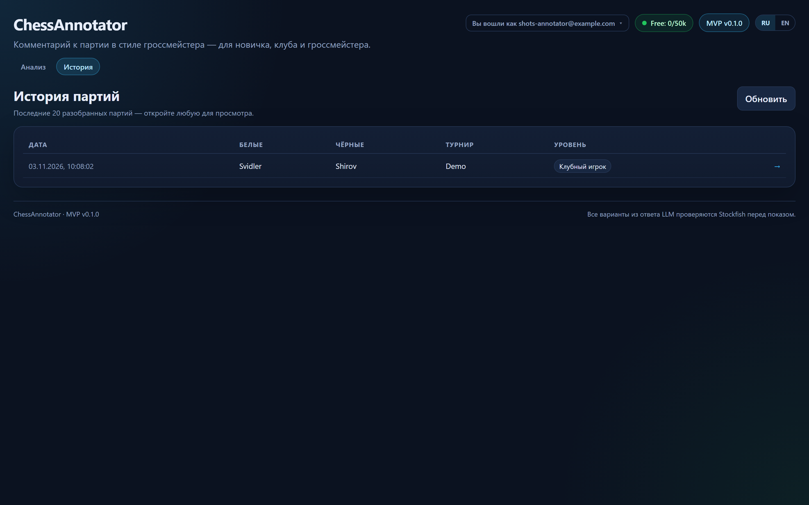

Три уровня
Новичок — простой язык и базовые принципы. Клубный игрок — тактика, стратегия и альтернативы. Гроссмейстер — профессиональная терминология и исторический контекст.
ChessAnnotator · v1.5.0
Загрузите PGN — получите связный комментарий, адаптированный под ваш уровень: новичок, клубный игрок или гроссмейстер. Stockfish находит факты, LLM пишет текст, валидатор проверяет каждый вариант.
Возможности
Загрузите PGN — получите связный комментарий, адаптированный под ваш уровень: новичок, клубный игрок или гроссмейстер. Stockfish находит факты, LLM пишет текст, валидатор проверяет каждый вариант.
Новичок — простой язык и базовые принципы. Клубный игрок — тактика, стратегия и альтернативы. Гроссмейстер — профессиональная терминология и исторический контекст.
Stockfish 17 даёт оценки и варианты, база аннотированных партий — контекст, LLM превращает факты в связный комментарий.
Каждый вариант из ответа LLM прогоняется обратно через движок. Нелегальные и ошибочные ходы отбрасываются, текст переписывается.
Ходы можно перетаскивать, открывать варианты, возвращаться к партии. Рекомендованные ходы и ошибки рисуются стрелками.
«Почему это плохо?» — вопрос относится к выбранному ходу. Ответы стримятся через SSE и проходят ту же проверку.
Экспорт разбора с диаграммами доски, русский и английский интерфейсы, комментарии и PDF.
Архитектура
LLM не придумывает ходы: она объясняет факты, которые нашёл Stockfish. Валидатор проверяет каждый вариант и утверждение о позиции.
Интерфейс
Реальные экраны продукта, снятые на локальном развёртывании. Клик — скриншот откроется в полном размере.


Статус
Версия 1.5.0 — Stripe Checkout/Portal, PWA и профиль, GPU-тренировки, RAG, PDF-экспорт и локализация RU/EN.
Развернём стенд на вашем железе или в вашем контуре и покажем, как продукт работает на ваших данных. Напишите — договоримся о демо.